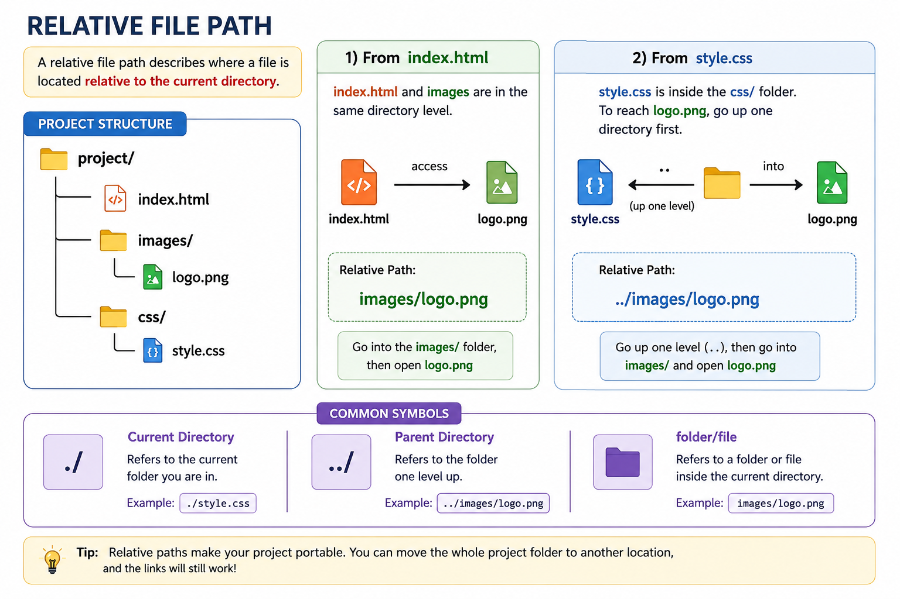

A relative file path describes where a file is located relative to the
current directory. 
Example:
If index.html needs to access logo.png, the relative path is:
images/logo.png.
If style.css needs to access logo.png, it goes up one directory first:
../images/logo.png.
Common symbols: ./ → current directory ../ → parent directory
folder/file → enter a subfolder